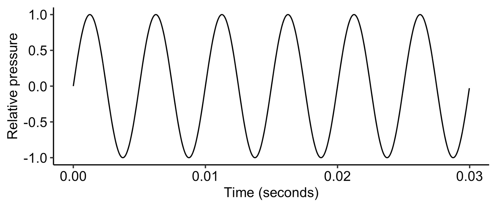

8 Foundations of acoustics
Air is a mixture of gases, comprising many tiny particles that move around at great speed, constantly bouncing off nearby objects and other gas particles:

Particles in a gas. Credit: Julio Miguel A Enriquez and Monica Muñoz, CC BY-SA 4.0
{kind=link}
An important property of air is its pressure. Air pressure is defined as the force that the air exerts on the objects that it touches, normalised by its contact area. On an average day, the air pressure at sea level is about 101,000 Newtons per square metre; this means that every square metre of surface is receiving 101,000 Newtons of force, the equivalent of about five elephants.
We see air pressure changing over time scales of hours and days due to changing atmospheric conditions. Generally speaking, low pressure is associated with clouds, wind, and rain, whereas high pressure is associated with fairer and calmer weather.
Sound, meanwhile, corresponds to variation in air pressure over much shorter time periods. These are the kinds of vibrations produced when a bow moves along a violin string, when air resonates in a flute, or when a mallet hits a drum.

Slow-motion violin string. Credit: SriVrushank, CC BY-SA 4.0
{kind=link}
The simplest form of sound is the pure tone. A pure tone corresponds to a very special mathematical object, the sine wave. Here’s what a sine wave looks like:

The graph shows pressure changing as a function of time. We see how pressure has a very regular, or periodic motion: its shape repeats exactly at regular intervals. Note that we’ve had to zoom into very small time intervals to see this repetitive structure: here the horizontal axis corresponds to just 0.03 seconds. Note also that, for convenience, we plot relative pressure, normalised such that zero corresponds to the baseline atmospheric pressure.
This is what the sine wave sounds like. The sound is considered very ‘pure’, as it only contains one sinusoidal component.
Like all sound waves, the pure tone travels through space. It takes the form of bands of alternating high and low pressure that move swiftly away from the sound source. In normal atmospheric conditions, the speed of the sound wave is approximately 343 metres per second.
The animation below illustrates what the sine wave looks like once we visualise the air as a collection of (normally invisible) gas particles. A high-pressure region (corresponding to a peak in the sine wave) is a region with a high density of air particles. We call such regions compressions. You can see these regions as vertical bands that move from left to right. In between the high-pressure regions we have low-pressure regions, which we call rarefactions.
Longitudinal wave. Credit: Dan Russell, CC BY-NC-ND 4.0
Sine waves are defined by three parameters: amplitude, frequency, and phase. Let’s consider each in turn.
The amplitude corresponds to the degree of pressure fluctuation in the sine wave. It is measured as the distance between the baseline and the extrema (i.e. the outer edges) of the wave. In the following figure the amplitude is 1.0 (in relative units):
A sine wave with an amplitude of 1.0.
If we decrease the amplitude to 0.5, the tone sounds quieter than it did before:
A sine wave with an amplitude of 0.5.
The frequency parameter determines how many complete wave cycles fit within one second. Frequency has the units ‘Hz’, so 30 cycles per second is written as 30 Hz, 40 cycles cycles per second is written as 40 Hz, and so on. Note that a complete cycle includes both the ‘upper’ segment and the ‘lower segment’ of the curve. For visualisation purposes, I’ve plotted a 5 Hz wave here, so we can see the number of cycles in a second; in practice, this frequency is below the range of human hearing:
A sine wave with a frequency of 5 Hz.
We can hear a 120 Hz wave, though:
A sine wave with a frequency of 120 Hz.
If we double the frequency, it sounds an octave higher:
A sine wave with a frequency of 240 Hz.
If we multiply the frequency by another 1.5, it sounds an additional perfect fifth higher:
A sine wave with a frequency of 360 Hz.
Later in this course we will discuss the relationship between frequency and pitch in more detail.
Lastly, the phase determines the starting point of the wave cycle. It takes values between zero and 2π, where π is a special mathematical constant with a value of approximately 3.14. A phase of zero means that the wave starts at the baseline, and immediately starts increasing in value, like all the previous examples:
A sine wave with a phase of 0.
Since 2π corresponds to a full cycle, a phase of 0.5π corresponds to a displacement of a quarter of a cycle.
A sine wave with a phase of 0.5π.
By the same logic, a phase of 1.5π corresponds to a displacement of three quarters of a cycle.
A sine wave with a phase of 1.5π.
Unlike frequency and amplitude, the effects of waveform phase on perception are subtle. We’re not going to worry about them for now.
Now we are going to introduce the first of two important mathematical formulae. The first formula provides the formal definition of the sine wave. It takes the following form:
\[ x(t)=A\sin\left(2 \pi f t + \phi \right) \]
where:
- \(x(t)\) is the relative pressure at time \(t\);
- \(A\) is the amplitude;
- \(\sin\) is a special mathematical function that you can find on a calculator, which takes a single number as an input and returns a number between -1 and 1;
- \(\pi\) is a constant approximately equal to 3.14;
- \(f\) is the frequency in Hz;
- \(\phi\) is the phase, taking values between \(0\) and \(2\pi\).
So, if you know the frequency, phase, and amplitude, then you can calculate the relative pressure at any point in time by plugging the values into the formula.
Because sound takes time to travel, the sound wave moves a certain distance in the time that the sound source takes to emit one complete cycle. This distance is called the wavelength. If we could take a snapshot of a sound wave travelling through the air, you would see this wavelength as the distance between the peaks of the sound wave.
Wavelength of a travelling wave. Credit: Tom Walsh, oPhysics, free for non-profit educational purposes.
Our second formula tells us how to compute this wavelength. It takes the following form:
\[ \lambda = \frac{v}{f} \]
where:
- \(\lambda\) is the wavelength (in metres);
- \(v\) is the speed of the wave (in metres per second);
- \(f\) is the frequency (in Hz).
If the wave is a sound wave, and we are assuming standard atmospheric conditions, then \(v\) corresponds to the speed of sound, approximately 343 metres per second. If we are talking about a medium other than air, for example a string on a violin, then the speed of the wave will be different.
This formula allows us to calculate the wavelength for a sound of a given frequency. For example:
| Frequency | Wavelength | |
|---|---|---|
| Concert A | 440 Hz | 78 cm |
| Mozart’s Queen of the Night aria, top F (F6) | 1397 Hz | 24.6 cm |
| Rachmaninov All-Night Vigil, bottom B flat (B♭1) | 58.3 Hz | 5.88 m |
So far we have just discussed the sine wave, which is just a particular kind of wave. We can imagine many other kinds of waves, for example the sawtooth wave and the square wave. All of these waves have different sounds.
Here’s a sawtooth wave, which has very sharp corners:
Sawtooth wave.
Here’s a square wave, which has rectangular corners:
Square wave.
A remarkable theorem called the Fourier theorem tells us that every periodic wave can be expressed by adding together a collection of sine waves. These sine waves may each have different amplitudes, frequencies, and phases, but otherwise all have the same shape.
It turns out then that a sawtooth wave can be created by adding together infinitely many pure tones whose frequencies follow an ascending arithmetic progression, for example 200 Hz, 400 Hz, 600 Hz, 800 Hz, and so on.3 These different pure tones are called the ‘harmonics’: 200 Hz is called the first harmonic, 400 Hz is called the second harmonic, and so on. Each harmonic is then given a relative amplitude equal to the first harmonic’s amplitude divided by the harmonic number, so the second harmonic has an amplitude of a half, the third harmonic has an amplitude of a third, and so on.

Fourier decomposition of a sawtooth wave.
A square wave is produced like a sawtooth wave, but with one simple change: all the even harmonics are removed.
Fourier decomposition of a square wave.
The sawtooth wave and the square wave are both examples of harmonic complex tones. A harmonic complex tone is defined as a wave built from combining many pure tones, each of which has a frequency that is a whole-number multiple of a so-called fundamental frequency. This sequence of whole-number multiples is called a harmonic series. Music scientists often use harmonic complex tones as idealised simulations of instrument timbres.
This motivates an alternative way of visualising sound waves. Instead of plotting pressure as a function of time (the waveform), we plot amplitude as a function of frequency, producing what we call the spectrum. The mathematical process of translating from the waveform to the spectrum is called Fourier analysis; it is something that can be accomplished straightforwardly using modern computer software.
Spectral representations for sawtooth (top row) and square (bottom row) waves.
See how both of these spectra are built from a collection of evenly spaced lines, corresponding to integer multiples of the fundamental frequency. We call the upper frequencies harmonics; if we had upper frequencies that didn’t correspond to integer multiples of the fundamental frequency, we’d call them partials.
Idealised harmonic spectrum. The sound example begins by playing the full tone, then demonstrates how the tone can be built up by superimposing pure tones one by one.
In the real world, a sound’s spectrum will typically change through time. We can plot this behaviour using a spectrogram. Here the horizontal axis corresponds to time, the vertical axis corresponds to frequency, and the colour corresponds to amplitude. Here the spectrogram is computed from a recording of a violin; you can see its very evenly spaced harmonics, manifested as parallel horizontal lines.
Spectrogram computed from a recording of a violin. Credit: megatron, CC BY-SA 3.0
It is also possible to construct more dynamic spectrograms in video form. For example, the following video displays a spectrogram for an old-fashioned dial-up modem connecting to the internet. Have a listen, and try to link what you see to what you hear.
Have a look at the following video and try to link what you see to what you hear. Note that here, lower frequencies are on the right, and higher frequencies on the left.
Dialup modem handshake sound (spectrogram). Scotty H, via YouTube